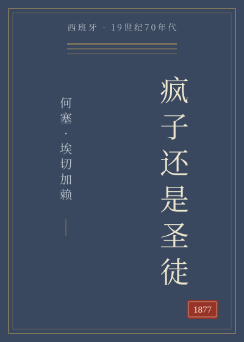
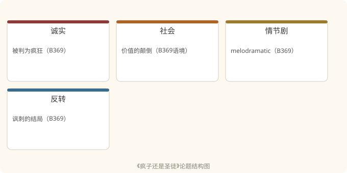

疯子还是圣徒
一、基本信息
| 作者 | 何塞·埃切加赖 |
|---|---|
| 成书/出版 | 1877年（Britannica B369：O locura o santidad (1877; Madman or Saint)） Jose Echegaray y Eizaguirre — Encyclopaedia Britannica（百科全书） |
| 国别/地区 | 西班牙 |
| 时代 | 近代 · 19世纪70年代 |
| 体裁 | 戏剧 |
| 语言 | 西班牙语 |

《疯子还是圣徒》论题结构图（主题·结构图）
二、创作背景
Britannica（B369）：'he showed that honesty is condemned as madness by society'——诚实被社会判为疯狂。
Britannica（B369）：埃切加赖——数学家、政治家与'leading Spanish dramatist of the last quarter of the 19th century'。
Britannica（B369）：'In all his plays his manner is melodramatic.'——情节剧式。
三、内容脉络
（通说待核——B369未载剧情）'诚实的疯子'：道德者被社会判为疯狂。
（通说待核）讽刺反转的结局（B369：satiric reversal 语境）。
四、主要人物表
| 人物 | 身份 | 说明 |
|---|---|---|
| 主角（无名待核） | '诚实者' | （通说待核，B369未载） |
五、主题与艺术特点
- '诚实被判为疯狂'（B369）。
- 情节剧的形式（B369：melodramatic）。
- 论题剧的先声（B369：thesis drama——后期语境交叉）。
六、影响与评论
- Britannica：1904诺奖（B369）。
Jose Echegaray y Eizaguirre — Encyclopaedia Britannica（百科全书） - Britannica：'helped revolutionize Spanish theatre'（B369）。
Jose Echegaray y Eizaguirre — Encyclopaedia Britannica（百科全书）
七、阅读建议
难点
- '论题剧'的辩论结构。
- 19世纪西班牙剧坛。
- 《疯子还是圣徒》中译名（《是疯子还是圣人》）待核。
- 西班牙文原版（公有领域）。
埃切加赖代表作；了解'情节剧'传统的入口。
八、待核实
- 剧情细节核对（通说）。
- 1877年首演细节待核。
- 中译名两说待核。
本页主要来源
何塞·埃切加赖的其他收录作品：疯子还是圣徒